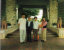
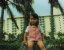
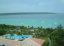
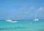

2001年5月10日 14時07分撮影
最近この「ふわふわボールプール」がお気に入り。
キャァキャァ・・・存分に楽しんでいます。
2001年5月1日撮影
ホテル出発。あ～、、、あっという間の４日間でした。
おじいちゃん・おばあちゃんは満足してくれたかな？2001年5月1日 10時01分撮影
今朝で、このブランコともお別れ。ここ、宮古島東急リゾートは
ホント良かった！いつかまた再訪したいところだね。2001年4月30日 16時50分撮影
レンタカーを借りて、島を一周しました。キティちゃんの浮輪は
手放しません。いつも一緒なのね。
2001年4月30日 8時09分撮影
毎朝、朝食後にお散歩。夜はみんな9時には寝てしまって、
６時に自然と目が覚める。。。健康的な生活でした。
2001年4月30日 8時05分撮影
ホテルの最上階からの眺め。
南の島は、の～んびりできて、非日常が楽しめますね。2001年4月29日 14時51分撮影
朝食後の散歩や、海へ行く途中に必ず乗る由起子お気に入りの
「ブランコ」。一人でこげるようになりました。2001年4月29日 11時31分撮影
このキティちゃんの浮輪がお気に入りで、いつでもどこへでも
持ち歩いてました。浮輪での泳ぎも上達したもんね。2001年4月29日 11時06分撮影
海の次は、プールでひと泳ぎ。
ちょっと怖いけど、パパと楽しいひととき・・・。
2001年4月29日 10時34分撮影
２日目はお天気がとっても良く、日差しが強いです。
海の色は、もう言葉にならないくらい「めっちゃ綺麗！」。